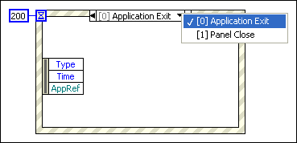

You must provide a case to handle the Timeout event if the timeout input is wired.
In the following example, the Event structure has a timeout wired for 200 milliseconds. However, neither of the event cases handles the Timeout event.
To correct this error, complete the following steps.
Before you configure events for the Event structure to handle, review the caveats and recommendations for using events in LabVIEW.